Artificial Intelligence Applied to Games
2026-11-15
Algorithms that help autonomous characters move in a more realistic and intelligent way.
Steering behaviors are algorithms that help autonomous characters move in a more realistic and intelligent way.
The behavior of the autonomous character movement is divided into 3 layers:
Steering behaviors live in the middle layer and stay independent of how the character will move.
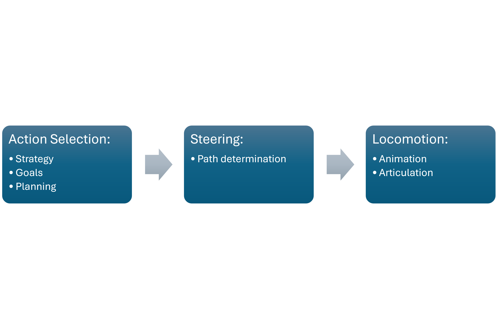
Simple local mathematics and vector calculations for realistic movement.
An autonomous agent is modeled as a point mass driven by three vectors:
Each simulation step updates the agent with a Euler integration:
\[\mathbf{p}_{t+1} = \mathbf{p}_t + \mathbf{v}_t\,\Delta t\]
(t) is the time step.
Steering behaviors produce a desired velocity, which is the velocity the agent wants to have at the moment. The steering force is the difference between the desired velocity and current velocity:
\[\mathbf{F}_{steer} = \mathbf{v}_{desired} - \mathbf{v}\]
This force points from the current velocity vector toward the desired velocity, turning and adjusting the agent’s speed.
Truncation (clamping)
Core local steering behaviors for single-agent navigation.
Moves the character towards a specific position in the global space, while adjusting its velocity aligned towards the target.
The inverse of Seek and makes the character’s desired velocity point in the opposite direction of the target.
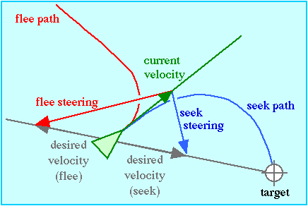
Identical to seek when far from its target. But when the character approaches its target it begins to slow down to stop more smoothly.
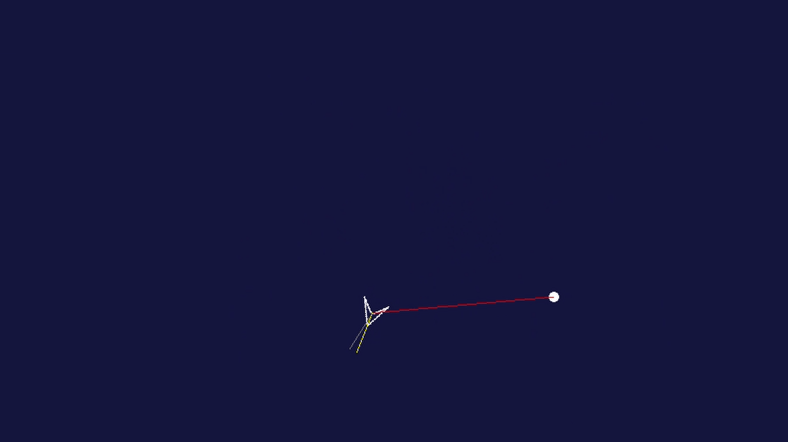
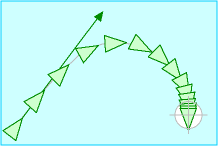
Similar to Seek but the character chases another moving character, attempts to predict where they are headed and tries to cut them off instead of just following the target.
The opposite of pursuit, the character tries to escape from other character, while trying to predict the target’s movement and adapt.
A type of random steering, the character moves randomly within a certain area.
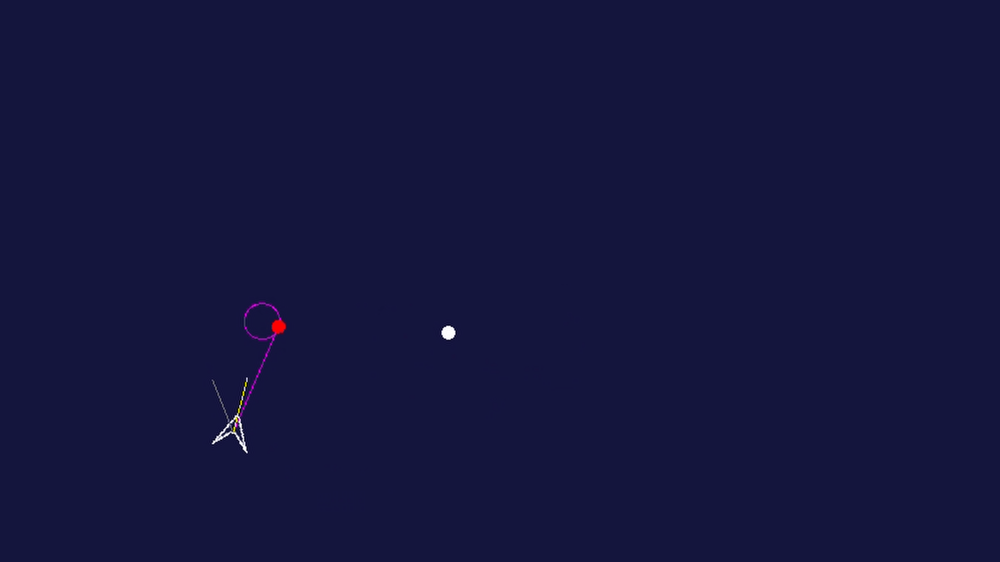
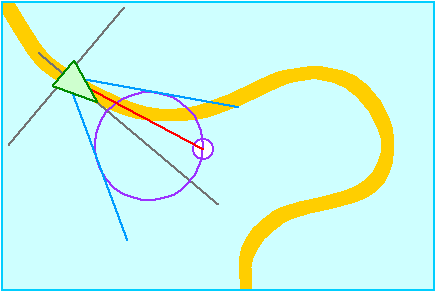
The character manoeuvres through the environment by dodging around obstacles, takes action only when a nearby obstacle is in front of the character.
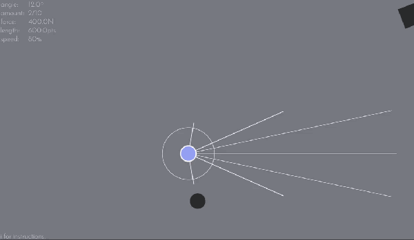
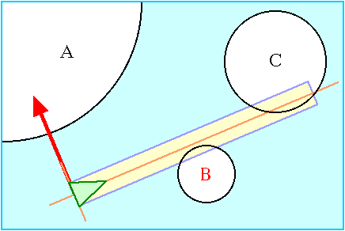
A character steers along a predetermined path, moves through a series of points along the path. The goal is to move the character along the path while staying within the specified radius.
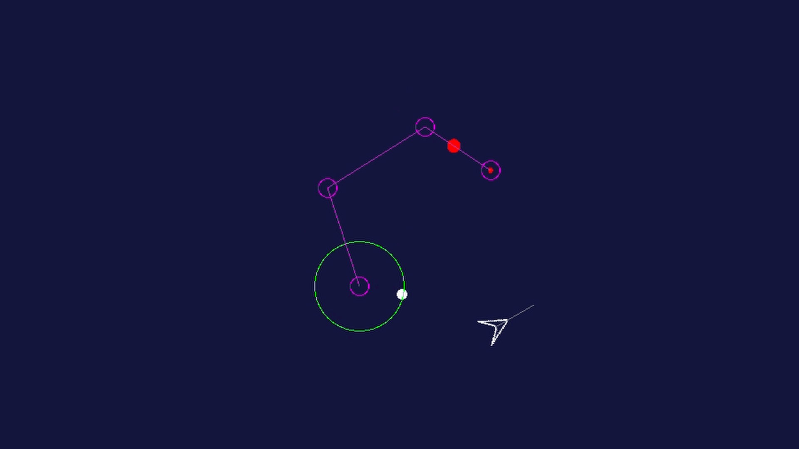
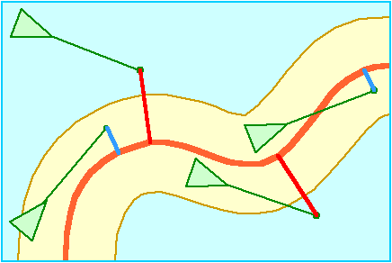
Directs the motion of characters based on their position within an environment. It defines a mapping from a location to a flow vector. It allows for motion specification without the use of programming.
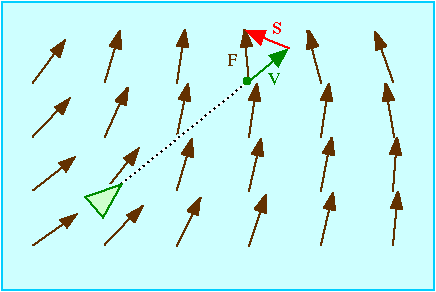
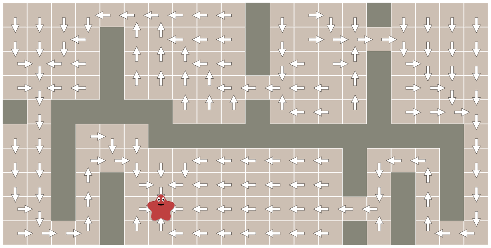
Tries to keep the characters which are moving in arbitrary directions from running into each other, by avoiding collisions and avoid being stuck. A collision may occur if the distance between the characters is too small.
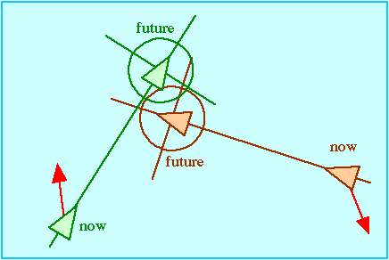
Coordinated movement across multiple nearby characters.
The character maintains a separation distance from other characters nearby to prevent crowding.
The character gains the ability to align its direction and speed with other characters nearby to have the same pace.
The character gains the ability to approach and form a group with other characters nearby.
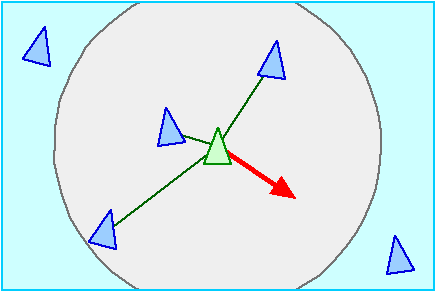
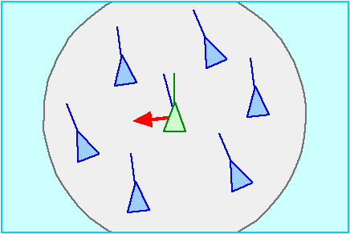
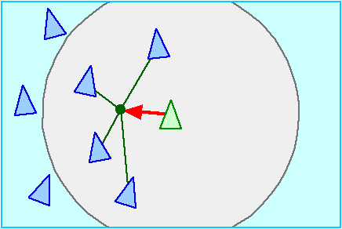
Flocking simulates the movement of characters that are grouped together, combining Separation, Cohesion, and Alignment behaviors to replicate birds or fish flocks, for example.
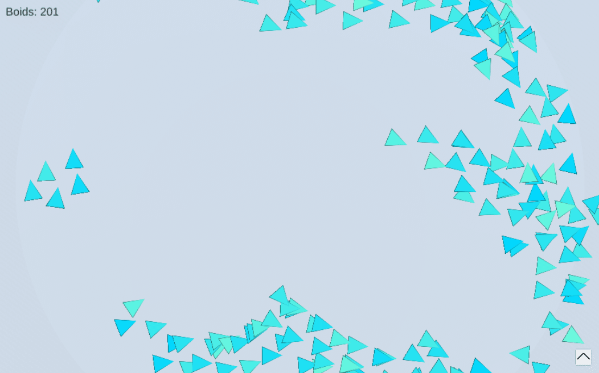
Makes one or more characters follow another moving character as their leader, staying near them without getting in their way.
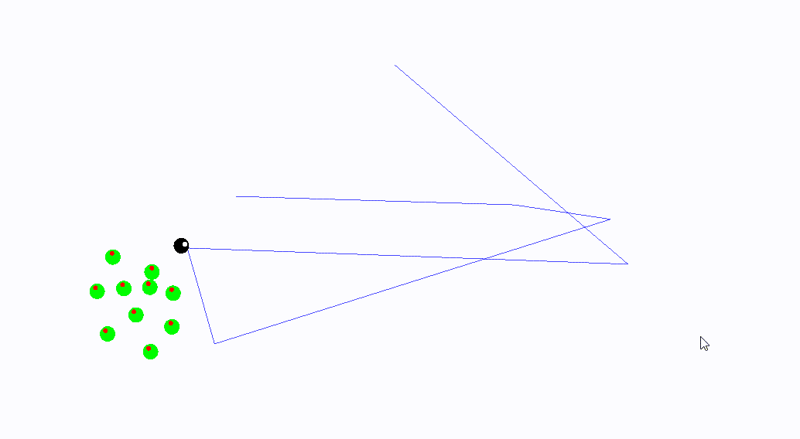
A character may switch between behavior modes as circumstances change in the game, such as events.
Some behaviors are commonly blended together and effectively act in parallel. A good example is when an animal NPC is running through the woods escaping a predator: this NPC can use the flee and obstacle avoidance behaviors to navigate effectively.
Blending is done by calculating the weighted sum of the steering forces produced by each behavior, and then truncating the result to the maximum force allowed.
\[\mathbf{F} = \sum_i w_i\,\mathbf{F}_i\]
Interactive steering behaviors in action.
[Replace the canvas drawing in scripts.js with your simulation.]
Why use steering behaviors and where do they appear in games?
As you may have noticed, we have been using these types of behaviors in our projects and classes.
[1] C. Reynolds, “Steering Behaviors For Autonomous Characters,” Red3d, 1999. https://www.red3d.com/cwr/steer/gdc99/ (accessed Nov. 01, 2026).
[2] K. Peters, AdvancED ActionScript 3.0 Animation. Friends of Ed/Apress, 2009.
[3] NCoT Technology, “Steering Behaviours,” NCoT Wiki, Nov. 10, 2026. https://wiki.ncot.uk/Game%20Development/AI%20and%20Pathfinding/Steering%20Behaviours/ (accessed Nov. 10, 2026).
[4] “Steering Behaviors | Glossary | GDQuest,” Gdquest.com, 2026. https://school.gdquest.com/glossary/steering_behaviors (accessed Nov. 10, 2026).
[5] J. Perez, “Introduction to Steering Behaviours,” GameDeveloper.com, June 24, 2014. https://www.gamedeveloper.com/design/introduction-to-steering-behaviours
[6] D. , “Steering Behaviours: Flocking,” Github, Jan. 03, 2014. https://howtorts.github.io/2014/01/03/steering-flocking.html (accessed Nov. 09, 2026).
Thank you for your time!
Steering Behaviors · Undergraduate in Games and Multimedia